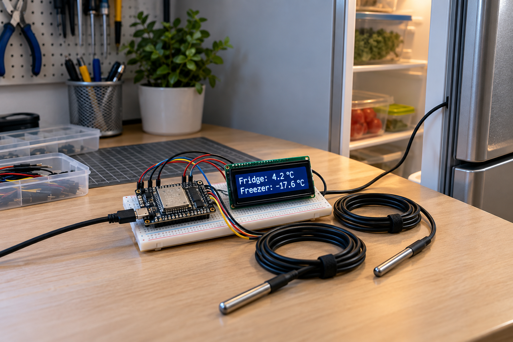
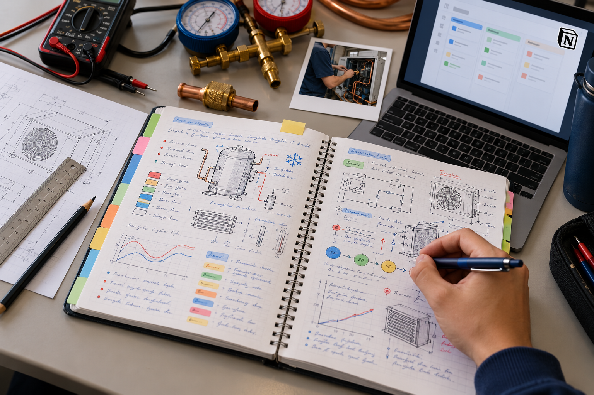

Monitoramento de temperatura da geladeira
Projeto pessoal em desenvolvimento com sensores, ESP32, coleta de dados e visualização de temperatura aplicada à refrigeração.

Projeto pessoal em desenvolvimento com sensores, ESP32, coleta de dados e visualização de temperatura aplicada à refrigeração.

Registros da minha formação no SENAI: disciplinas, práticas, exercícios, fotos, dúvidas e materiais de estudo no Notion.
Meu currículo reúne minha formação técnica em andamento, cursos complementares, experiência anterior em tecnologia e atendimento, além dos conhecimentos que venho desenvolvendo nas áreas de refrigeração, climatização, elétrica, comandos elétricos e automação.